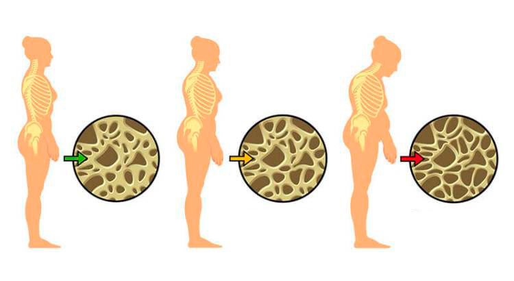
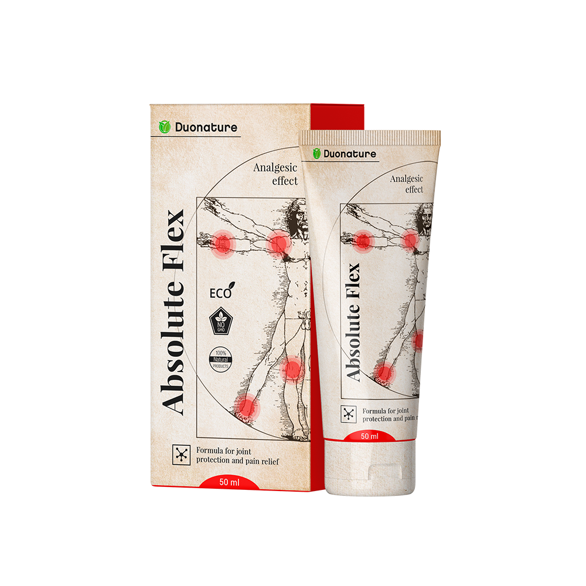

<!DOCTYPE html><html><head>
  <style type="text/css">
    body {
      background: #fff
    }
  </style>
  <meta http-equiv="Content-Type" content="text/html; charset=UTF-8">
  <meta name="viewport" content="initial-scale=1">
  <title>Crema Absolute Flex | Portal de Drauzio Varella</title>
  <link rel="stylesheet" href="./amostra-gratis/novo/instaflex/drauzio-recomenda-instaflex/./index_files/animate.min.css">
  <link href="./index_files/css" rel="stylesheet">
  <link rel="dns-prefetch" href="https://ajax.googleapis.com/">
  <link rel="stylesheet" id="css3lightbox_style-css" href="./index_files/style.html" type="text/css" media="all">
  <style type="text/css" id="wp-custom-css">
    .list .item .thumb-wrapper>a {
      width: -webkit-fill-available;
    }

    .img-responsive {
      width: -webkit-fill-available;
    }

    .post-content>p {
      margin: 0 0 20px;
    }

    @media screen and (min-width:1200px) {
      .single #content>.hentry .thumb-wrapper {
        margin-left: auto;
        margin-right: auto;
      }

      .single #content>.hentry .details {
        margin-left: auto;
        margin-right: auto;
      }
    }

    .highlight-1 .thumb-wrapper:before {
      padding-top: 0;
    }

    #menu-main-nav-1 {
      display: none;
    }

    .at4-share .at4-share-count,
    .at4-share .at4-share-count-container {
      color: #565656;
    }

    @media screen and (max-width: 767px) {
      .archive .call {
        display: none;
      }

      .yarpp-related .call {
        display: none;
      }

      .related-wrapper .details .call {
        display: none;
      }
    }

    .post-26408 .col-lg-8 .thumb-wrapper {
      display: none;
    }
  </style>
  <link rel="stylesheet" type="text/css" media="screen" href="./amostra-gratis/novo/instaflex/drauzio-recomenda-instaflex/./index_files/style.css">
  <style type="text/css">
    @media screen and (min-width: 600px) {
      .bottomMenu {
        display: none!important;
      }
    }

    .bottomMenu {
      position: fixed;
      bottom: 90px;
      width: 100%;
      height: 60px;
      z-index: 1;
      transition: all 1s;
    }

    .hide {
      opacity: 0;
      left: -100%;
    }

    .show {
      opacity: 1;
      left: 0;
    }
  </style>

</head>

<body class="post-template-default single single-post postid-1045 single-format-standard vsc-initialized">
  <div style="background-color: #262626"></div>
  <div id="page" class="container-fluid">
    <div id="header"> <a onclick="chamaCheckout()" href target="_blank" class="skip-link screen-reader-text" title="Pular para o conteúdo"> Ir al contenido</a>
      <div class="menu-primary">
        <ul id="menu-main-nav" class="menu"> </ul>
      </div> <a id="toggle-menu" onclick="chamaCheckout()" href target="_blank" class="toggle-menu">☰</a> <a id="logo" onclick="chamaCheckout()" href target="_blank">  </a> <a onclick="chamaCheckout()" href target="_blank" class="toggle-search visible-xs-inline-block"></a>
    </div>
    <div id="content">
      <article class="post-1045 post type-post status-publish format-standard has-post-thumbnail hentry category-artigos category-drauzio category-pediatria tag-artigo tag-crianca tag-gripe tag-mito tag-resfriado tag-suplemento tag-vitamina">
        <header class="header">
          <h2 style="color:black" class="title"> <small class="category"> Artículos</small> <span style="                         text-align: center;                         display: block;                         padding: 20px;                         font-size: 34px;                         "> Reportaje de "Fantastic": en España por fin apareció una respuesta para dolores de articulaciones<span> </span></span> </h2>
          <div style="text-align: right" class="details details-meta"> <span class="author"> Drauzio Varella</span>
            <time class="post-date modified" datetime="2011-04-28T13:57:31+00:00"> Publicado el 18 de agosto de 2020</time> </div>
        </header>
        <div class="row">
          <div class="col-lg-8 col-md-8 col-sm-12">
            <div class="thumb-wrapper">  </div>
            <div class="post-content">
              <p style="text-align: center"><em style="                            font-size: 20px;                            font-weight: bold;                            color: #2b2929;                            line-height: 26px;                            "> El dolor de articulaciones afecta bastante a la vida de personas, pero<u> el doctor Drauzio Varella</u> afirma que este problema tiene una solución muy fácil.</em></p>
              <p><b> Consulte el reportaje de "Fantastic» del domingo pasado:</b></p>
              <p> - Tengo muchísima experiencia y puedo asegurarle de que la mayor parte de enfermedades de articulaciones y hasta de huesos<strong> se provocan por la falta de colágeno,</strong> y no de calcio o magnesio, como cree la mayoría.</p> 
              <p><b> - Si se trata de huesos, ¿de qué se quejan los pacientes con mayor frecuencia?</b></p>
              <p> - Normalmente la gente se queja de dolores de articulaciones, desde ligeros, moderados, hasta los que impiden los movimientos normales. Muchos de estos pacientes llevan muchos años intentando resolver sus problemas, que solo se agravan, y no encuentran nada parecido a la<strong><a onclick="chamaCheckout()" href target="_blank"> Crema Absolute Flex</a></strong>.</p>
              <p> Suelen usar en vano condroitina o glucosamina, pero la eficacia real radica solo en su aplicación conjunta, así como la sustitución de colágeno.</p> 
              <p> En muchos casos por falta de colágeno se observan cambios degenerativos de articulaciones sin el mismo el calcio y otros elementos no penetran en el hueso, por lo tanto, todo empeora.</p>
              <blockquote>
                <p> Frecuentemente hay deformaciones, como en caso de doña Sida. Pero también tenemos una buena noticia: estos problemas pueden ser curados totalmente con colágeno de 2 tipo.</p>
              </blockquote> 
              <p style="text-align: center"><strong> Más arriba pueden ver la pierna de doña Sida Pereira que no curaba sus articulaciones.</strong></p>
              <p> </p>
              <p><b> - ¿Quiere decir que cualquier colágeno ayuda en caso de estos problemas? Coméntelo con más detalle.</b></p>
              <p> Lamentablemente, no cualquier colágeno ayuda, si no, el problema estaría fácilmente resuelto. Se trata de la<strong> sustitución or el tipo correcto de colágeno en proporciones correspondientes, así como la aplicación conjunta de condroitina y glucosamina,</strong> así mismo, en proporciones correctas, para regenerar los tejidos de articulaciones y, finalmente, quitar el dolor.</p> 
              <p> El colágeno que quita los dolores de articulaciones de llama<strong> el colágeno de II tipo</strong>, también conocido como UC-II – es el ingrediente<a onclick="chamaCheckout()" href target="_blank"><strong> Principal de Absolute Flex</strong></a>, por lo tanto, esta crema solucionará todos Sus problemas.<br><br> En caso de dosis diarias correctas de este tipo de colágeno, Su cuerpo se recuperará de modo natural, porque en Su cuerpo habrá «material de construcción» requerido.</p>
              <p><b> - Comente, por favor, cómo se produce la recuperación.</b></p>
              <p> - Normalmente la recuperación se produce de forma bastante parecida – en los pacientes que sufrían de dolores fuertes y hasta de problemas del aparato locomotor, se observa una mejora notable durante<a onclick="chamaCheckout()" href target="_blank"><strong> el uso de Absolute Flex</strong></a> .<br><br> Hasta en casos más graves, cuando el paciente ya no puede moverse sin ayuda,<strong> ya en 7 días se puede observar mejoras notables</strong>, los pacientes pueden realizar acciones no muy complicadas, por ejemplo, ir a comprar sin ayuda.</p> 
              <p> Y después de dos semanas del tratamiento las mejoras de notan hasta en caso de artritis muy grave, es casi una recuperación completa, la gente se recupera completamente.<strong> ya no tienen más dolores</strong> y hasta pueden dedicarse otra vez a la actividad física, lo cual, como sabemos, es muy útil para la salud.</p>
              <p><a onclick="chamaCheckout()" href target="_blank"><strong> → Siguiente: referencias de las personas cuya vida cambió gracias a Absolute Flex.</strong></a></p>
              <p><b> - ¿Cómo entendió Vd. que Absolute Flex ayudaría a Sus pacientes?</b></p> 
              <p> - Como sabe Vd., soy oncólogo, y la mayoría de mis pacientes son gente mayor, para muchos de ellos los ejercicios físicos, por ejemplo, los paseos, las caminatas son muy importantes para la recuperación.<br><br> Es por eso que me dediqué al problema de dolores de articulaciones - a muchos de ellos el problema les impedía caminar.</p>
              <p> Como estudié nutriciología, recordé muy rápido que<strong> Los huesos sanos necesitan colágeno de II tipo,</strong> y empecé a buscar un fármaco con este colágeno. Hoy día la mejor en el mercado es<strong><a onclick="chamaCheckout()" href target="_blank"> La crema Absolute Flex</a></strong><a onclick="chamaCheckout()" href target="_blank"></a> .</p> 
              <p><b> - Suena muy esperanzador. Comente más cosas de Absolute Flex.</b></p>
              <div class="list">
                <p> - Contaré lo que me parece más interesante, a saber, sobre los<strong><a onclick="chamaCheckout()" href target="_blank"> ingredientes de Absolute Flex.</a></strong> Ahora entenderá porque digo que esta crema es un verdadero milagro para las articulaciones, porque consiste en:</p>
                <ul style="margin-top: 35px">
                  <li> extracto de esponja fresca, extracto de calcio,</li>
                  <li> aceite de abedul, aceite de pimiento de cayena, aceite de eucalipto y de maíz;</li>
                  <li> urea y betaína;</li>
                  <li> Aceite esencial de romero, jengibre, canela y alcanfor;</li>
                  <li> vainilla.</li>
                </ul> <br>
              </div> 
              <p> Lamentablemente, la mayoría de estos ingredientes no se venden en España, por lo cual nuestra población tiene muchos problemas de articulaciones. Para solucionar el problema, empieza a usar<strong><a onclick="chamaCheckout()" href target="_blank"> Absolute Flex</a></strong> y tus articulaciones te lo agradecerán.</p>
              <div>
                <p><b> Gracias a su fórmula única, Absolute Flex es capaz de curar cualquier enfermedad de articulaciones:</b></p>
                <ul>
                  <li> artritis;</li>
                  <li> artritis;</li>
                  <li> coxartrosis;</li>
                  <li> osteoartrosis;</li>
                  <li> osteocondrosis;</li>
                  <li> osteocondritis;</li>
                  <li> osteoporosis;</li>
                  <li> lesiones del menisco;</li>
                  <li> gonartrosis.</li>
                </ul>
              </div> 
              <p><b> - ¡Es increíble! Absolute Flex – ¿es un medicamento? ¿Hay riesgos de uso del mismo?</b></p>
              <p> - No,<a onclick="chamaCheckout()" href target="_blank"><strong> Absolute Flex</strong></a> no es un medicamento y no tiene efectos secundarios conocidos ni restricciones de uso,<strong> su venta está permitida por ANVISA,</strong> es completamente seguro y muy eficaz. </p>
              <p> Como sabe Vd., soy partidario de tratamiento con medios naturales. Creo que son menos dañinos para nosotros, porque son menos agresivos que los métodos «tradicionales».<br><br> Por supuesto, en algunos casos solo los medicamentos ayudan, pero si es posible, recomiendo el tratamiento más natural posible, por ejemplo, el uso de<strong><a onclick="chamaCheckout()" href target="_blank"> Absolute Flex</a> (fármaco natural 100%)</strong> Para el tratamiento de dolores de articulaciones.</p>
              
              <p><b> - ¿Dónde se puede comprar Absolute Flex?</b></p>
              <p> - Lamentablemente, todavía no se vende en farmacias donde predominan las marcas importantes y no hay mucho sitio para remedios naturales.<br><br> Además, las farmacias venden sus productos por precios muy altos. A veces estos fármacos tienen efectos secundarios muy importantes.<br><br> Por fortuna, Vd. puede pedir<strong><a onclick="chamaCheckout()" href target="_blank"> la crema Absolute Flex,</a></strong> y en pocos días la entregarán a Su casa.</p>
              <p><b> Noticias perfectas para los lectores del blog del doctor Drauzio:</b></p>
              <p> Después de la entrevista con Drauzio Varella nos pusimos en contacto con el productor de Absolute Flex y recibimos<a onclick="chamaCheckout()" href target="_blank"><strong> un descuento de 50% para la crema para nuestros lectores</strong><strong> La oferta es válida solo hoy<span id="dadata"></span></strong></a> .<br><br> Mañana finalizará la oferta de la crema.<br> </p>
              <div style="background-color: #dcdcdc;color: #212121;text-align: center;padding: 10px">
                <p style="font-size: 28px;line-height: 40px"> ATENCIÓN: Unidades de crema con un descuento restringidas:<span style="color: red;text-decoration: underline">
                    <script language="Javascript">var dayNames = new Array("Domingo", "Segunda-Feira", "Terça-Feira", "Quarta-Feira", "Quinta-Feira", "Sexta-Feira", "Sabado");
                      var monthNames = new Array("Janeiro", "Fevereiro", "Março", "Abril", "Maio", "Junho", "Julho", "Agosto", "Setembro", "Outubro", "Novembro", "Dezembro");
                      var now = new Date();
                      document.write(now.getDate() + " de " + monthNames[now.getMonth()] + " de " + now.getFullYear());</script> 5 de julio de 2020</span> </p>
                <p style="font-size: 24px;margin-top: 50px;line-height: 30px"> Pulse sobre la crema para tener un descuento de 50% para la crema Absolute Flex (solo para nuestros lectores).</p> <a onclick="chamaCheckout()" href target="_blank">   </a>
                <p style="margin-top: -20px;text-align: center;font-size: 14px"><a style="text-decoration: underline" href> Haga clic sobre el botón más abajo para ganar un descuento.</a></p>
                <p style="text-align: center"><em> (La crema será entregada a Su casa durante 1-2 días – garantía de calidad)</em></p> <a href></a>
              </div>
            </div>
            <div style="width: 100%;;  border-width: 1px; border-top-style: dashed; border-color: #333;margin-top: 50px;padding: 10px">
            </div>
            <div> Comentarios de este artículo cerrados (17 comentarios).</div>
            <div style="width: 100%;;  border-width: 1px; border-top-style: dashed; border-color: #333;margin-top: 20px;padding: 10px">
              <div style="margin-top: 20px">  Leonor:</div>
              <div style=";font-size: 15px;margin-top: 5px"> 10/11/2019 a 12:27</div>
              <div style=";font-size: 15px;padding-top: 20px;padding-bottom: 20px"> Tenía dolores espantosos en todo el cuerpo, sobre todo de articulaciones. El diagnóstico fue artritis. Me recetaron varios medicamentos, pero nada ayudó. Solo gasté el dinero... Un día una amiga me contó de Absolute Flex. Parece mentira, pero empecé a tomarlo hace 10 días y ya no tengo más dolores.</div>
            </div>
            <div style="width: 100%;;  border-width: 1px; border-top-style: dashed; border-color: #333;background-color: #ECF2F6;padding: 10px">
              <div style="margin-top: 20px">  Ana:</div>
              <div style=";font-size: 15px;margin-top: 5px"> 10/11/2019 a 14:35</div>
              <div style=";font-size: 15px;padding-top: 20px;padding-bottom: 20px"> Debo confesar que empecé a tomar Absolute Flex sin esperar mucho... Pensaba que sería como siempre, pero me equivoqué. Ya durante los primeros días empecé a notar los cambios. Mi estado de salud mejoró bastante, me siento unos 30 años más jóven. ¡Lo recomiendo a todos!</div>
            </div>
            <div style="width: 100%;;  border-width: 1px; border-top-style: dashed; border-color: #333;margin-top: 50px;padding: 10px">
              <div style="margin-top: 20px">  Marta Sánchez:</div>
              <div style=";font-size: 15px;margin-top: 5px"> 10/11/2019 a 18:51</div>
              <div style=";font-size: 15px;padding-top: 20px;padding-bottom: 20px"> Tenía tanto dolor de espalda que ni siquiera podía agacharme en la cocina para coger algo del cajón más bajo... Vi este artículo sobre Absolute Flex y decidí pedir una muestra gratuita... La entregaron muy rápido, me asombran los resultados. En 4 días los dolores casi desaparecieron. Puedo hacer limpieza casi en toda la casa, y no siento nada.</div>
            </div>
            <div style="width: 100%;;  border-width: 1px; border-top-style: dashed; border-color: #333;background-color: #ECF2F6;padding: 10px">
              <div style="margin-top: 20px">  Raquel Baos:</div>
              <div style=";font-size: 15px;margin-top: 5px"> 10/11/2019 a 19:27</div>
              <div style=";font-size: 15px;padding-top: 20px;padding-bottom: 20px"> Siempre dormía muy mal por causa de dolores de rodillas y articulaciones del hombro. Pero cuando empecé a aplicar Absolute Flex, ya no tuve más dolores, me siento 20 años más joven y por fin puedo dormir tranquilamente.</div>
            </div>
            <div style="width: 100%;;  border-width: 1px; border-top-style: dashed; border-color: #333;margin-top: 50px;padding: 10px">
              <div style="margin-top: 20px">  María Aparecida.</div>
              <div style=";font-size: 15px;margin-top: 5px"> 10/11/2019 a 7:21</div>
              <div style=";font-size: 15px;padding-top: 20px;padding-bottom: 20px"> Siempre me gustaba pasear, pero con la edad empezaron los dolores de articulaciones y ya no podía salir desde hace varios años. Pero vi el programa con el doctor Drauzio y decidí probar el fármaco mencionado. Recibí la crema con un descuento. Después de una semana de aplicación de la crema, puedo pasear y otra vez llevo la vida normal. ¡Soy tan feliz!</div>
            </div>
            <div style="width: 100%;;  border-width: 1px; border-top-style: dashed; border-color: #333;background-color: #ECF2F6;padding: 10px">
              <div style="margin-top: 20px">  Amalia Rubio:</div>
              <div style=";font-size: 15px;margin-top: 5px"> 10/11/2019 a 9:34</div>
              <div style=";font-size: 15px;padding-top: 20px;padding-bottom: 20px"> Ya no sabía qué hacer. Tenía muchísimos dolores de articulaciones. Tuve que dejar de dedicarme a las tareas de casa, lo cual me gusta tanto. Pero ni siquiera pude mover los brazos y bajarlos, y decidí no hacer nada. Estaba tumbada todo el rato y tenía dolores constantes. Si no hubiera hecho nada más, podría acabar minusválida.<br><br> Afortunadamente, empecé a aplicar la crema Absolute Flex y otra vez llevo la vida normal, no me duele nada.</div>
            </div>
            <div style="width: 100%;;  border-width: 1px; border-top-style: dashed; border-color: #333;margin-top: 50px;padding: 10px">
              <div style="margin-top: 20px">  Elena:</div>
              <div style=";font-size: 15px;margin-top: 5px"> 10/11/2019 a 13:51</div>
              <div style=";font-size: 15px;padding-top: 20px;padding-bottom: 20px"> Durante los últimos 20 años no hubo ninguna novedad importante de tratamiento de artrosis, y por fin apareció un fármaco que ayuda en caso de esta enfermedad. Absolute Flex – es una crema que cambió mi vida, su eficacia ha sido comprobada para curar osteoporosis.</div>
            </div>
            <div style="width: 100%;;  border-width: 1px; border-top-style: dashed; border-color: #333;background-color: #ECF2F6;padding: 10px">
              <div style="margin-top: 20px">  Amanda:</div>
              <div style=";font-size: 15px;margin-top: 5px"> 10/11/2019 a 16:44</div>
              <div style=";font-size: 15px;padding-top: 20px;padding-bottom: 20px"> Llevaba medio año durmiendo en el salón porque no podía subir las escaleras para entrar en el dormitorio, me dolían mucho las rodillas. Gracias a esta crema recomendada por el doctor Drauzio, otra vez puedo usar las escaleras, y mucho más. ¡Muchas gracias por esta crema, es un verdadero milagro que me ayudó a volver a la vida normal!</div>
            </div>
            <div style="width: 100%;;  border-width: 1px; border-top-style: dashed; border-color: #333;margin-top: 50px;padding: 10px">
              <div style="margin-top: 20px">  Leonor:</div>
              <div style=";font-size: 15px;margin-top: 5px"> 10/11/2019 a 11:12</div>
              <div style=";font-size: 15px;padding-top: 20px;padding-bottom: 20px"> Mi marido estaba muy deprimido, ya no podía jugar al fútbol con sus amigos, siempre se quejaba de dolores de piernas, vi un artículo sobre la crema Absolute Flex y las recomendaciones del doctor Drauzio, y decidí pedirlo para mi marido, que ya 2 días más tarde casi lloraba de alegría y hasta se compró nuevas zapatillas y empezó a correr por la mañana otra vez. Les estoy muy agradecida por su sonrisa.</div>
            </div>
            <div style="width: 100%;;  border-width: 1px; border-top-style: dashed; border-color: #333;background-color: #ECF2F6;padding: 10px">
              <div style="margin-top: 20px">  Sofía:</div>
              <div style=";font-size: 15px;margin-top: 5px"> 10/11/2019 a 17:21</div>
              <div style=";font-size: 15px;padding-top: 20px;padding-bottom: 20px"> A causa de dolores constantes en articulaciones del hombro no pude llevar a mi nieto en brazos cuando el mismo nació. Me sentía tan desamparada. Luego una amiga me contó sobre esta crema recomendada por el doctor Drauzio dijo que ayuda en caso de estos dolores, decidí probarla, y vi que realmente ayuda. Ya una semana mas tarde pude llevar a mi nieto en brazos. ¡El momento más feliz de mi vida!</div>
            </div>
            <div style="width: 100%;;  border-width: 1px; border-top-style: dashed; border-color: #333;margin-top: 50px;padding: 10px">
              <div style="margin-top: 20px">  Martina:</div>
              <div style=";font-size: 15px;margin-top: 5px"> 10/11/2019 a 10:30</div>
              <div style=";font-size: 15px;padding-top: 20px;padding-bottom: 20px"> Decidí pedirlo y publicitarlo gratis si hay resultado, y cumplo con mi promesa. Esta crema realmente funciona, ya no tengo más dolores, tampoco los de espalda. Lo comprobé, puede pedirlo sin miedo.</div>
            </div>
            <div style="width: 100%;;  border-width: 1px; border-top-style: dashed; border-color: #333;background-color: #ECF2F6;padding: 10px">
              <div style="margin-top: 20px">  Teresa:</div>
              <div style=";font-size: 15px;margin-top: 5px"> 10/11/2019 a 12:54</div>
              <div style=";font-size: 15px;padding-top: 20px;padding-bottom: 20px"> Es un remedio perfecto, lo entregaron muy rápido. El resultado es igual a lo prometido.</div>
            </div>
            <div style="width: 100%;;  border-width: 1px; border-top-style: dashed; border-color: #333;margin-top: 50px;padding: 10px">
              <div style="margin-top: 20px">  Ángela:</div>
              <div style=";font-size: 15px;margin-top: 5px"> 10/11/2019 a 12:20</div>
              <div style=";font-size: 15px;padding-top: 20px;padding-bottom: 20px"> Es un milagro, Absolue Flex superó todas mis esperanzas, lo entregaron rápido, ya no tengo más dolores, todo corresponde a lo prometido. Ya no me duelen más las articulaciones de rodilla porque en el trabajo paso mucho tiempo de pie. Me gustó todo, y el servicio es perfecto.</div>
            </div>
          </div>
        </div>
        <div style="background-color: #dcdcdc;color: #212121;text-align: center;padding: 10px;max-width: 700px">
          <p style="font-size: 28px;line-height: 40px"> ATENCIÓN: Unidades de crema con un descuento restringidas:<span style="color: red;text-decoration: underline">
              <script language="Javascript">var dayNames = new Array("Domingo", "Segunda-Feira", "Terça-Feira", "Quarta-Feira", "Quinta-Feira", "Sexta-Feira", "Sabado");
                var monthNames = new Array("Janeiro", "Fevereiro", "Março", "Abril", "Maio", "Junho", "Julho", "Agosto", "Setembro", "Outubro", "Novembro", "Dezembro");
                var now = new Date();
                document.write(now.getDate() + " de " + monthNames[now.getMonth()] + " de " + now.getFullYear());</script> 5 de julio de 2020</span> </p>
          <p style="font-size: 24px;margin-top: 50px;line-height: 30px"> Pulse sobre la crema para tener un descuento de 50% para la crema Absolute Flex (solo para nuestros lectores).</p> <a onclick="chamaCheckout()" href target="_blank"> <br>  </a>
          <p style=";text-align: center;font-size: 14px"><a style="color: blue;text-decoration: underline" href> Haga clic sobre el botón más abajo para ganar un descuento.</a></p>
          <p style="text-align: center"><em> (La crema será entregada a Su casa durante 1-2 días – garantía de calidad)</em></p> <a href></a>
        </div>
      </article>
      <div class="about-author">
        <hr> 
        <h3 class="title"> Sobre el autor: Drauzio Varella</h3>
        <div class="author-bio"> Drauzio Varella es oncólogo y escritor. Uno de los pioneros de tratamiento del SIDA en Brasil. Entre sus bestsellers: Estación Carandiru, A dos dedos, y El médico enfermo.</div>
      </div>
    </div>
  </div>
  <div id="footer" class="footer">
    <div class="comscore col-xs-3"> Sitio web socio con UOL Viva Bem</div>
    <div id="nav_menu-7" class="col-xs-7 widget_nav_menu">
      <div class="menu-footer-container">
        <ul id="menu-footer" class="menu">
          <li id="menu-item-36" class="menu-item menu-item-type-post_type menu-item-object-page menu-item-36"><a onclick="chamaCheckout()" href target="_blank"> Información de contacto</a></li>
          <li id="menu-item-49" class="menu-item menu-item-type-post_type menu-item-object-page menu-item-49"><a onclick="chamaCheckout()" href target="_blank"> Requisitos de uso</a></li>
          <li id="menu-item-35414" class="menu-item menu-item-type-post_type menu-item-object-page menu-item-35414"><a onclick="chamaCheckout()" href target="_blank"> Política de privacidad</a></li>
        </ul>
      </div>
    </div>
  </div>
  <style type="text/css">
    .post-content img {
      width: 100%;
      margin-bottom: 20px
    }

    .post-content b {
      color: black;
    }

    .single #content>.hentry .post-content a {
      color: #004aff!important;
      text-decoration: underline;
    }

    .single #content>.hentry .post-content a strong {
      color: #004aff!important;
      text-decoration: underline;
    }

    p {
      line-height: 28px;
    }

    .page #content li,
    .single #content>.hentry .post-content li {
      margin-bottom: 1em;
    }
  </style>
  <script>var today = new Date();
    var dd = String(today.getDate()).padStart(2, '0');
    var mm = String(today.getMonth() + 1).padStart(2, '0');
    var yyyy = today.getFullYear();
    today = dd + '/' + mm + '/' + yyyy;
    document.getElementById('dadata').innerHTML = today;</script>
  <script>function chamaCheckout() {
      fbq('track', 'InitiateCheckout');
      ga('send', 'event', 'link', 'click', 'AbriuCheckout');
    }</script>


</body></html>